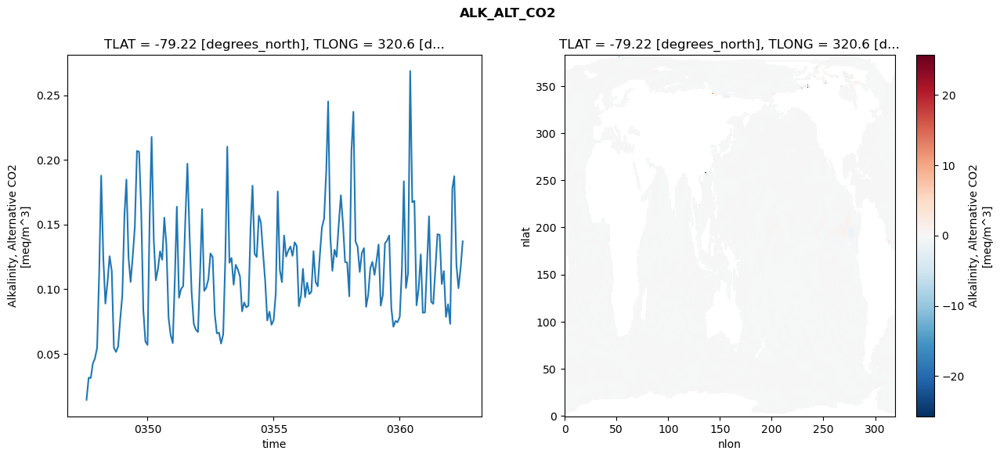
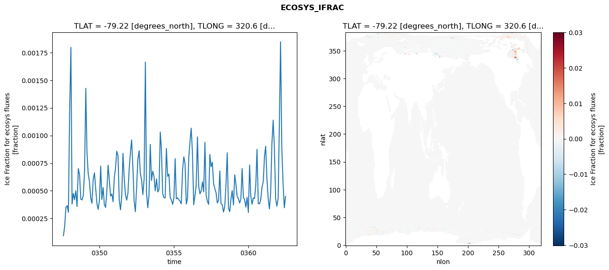
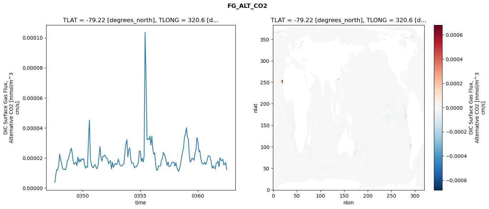
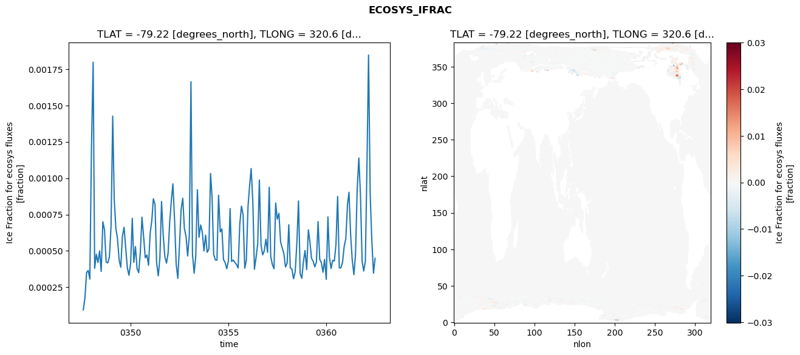
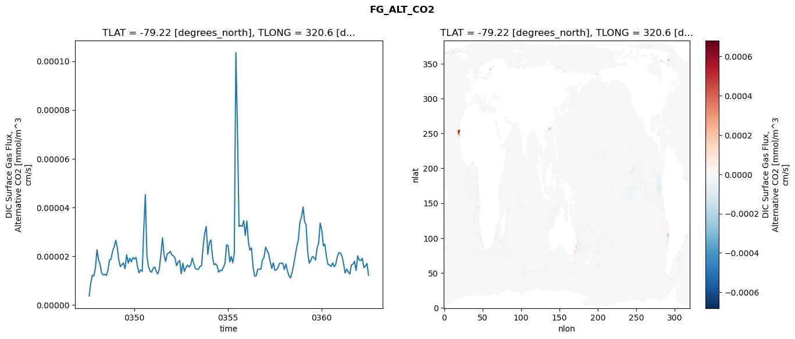
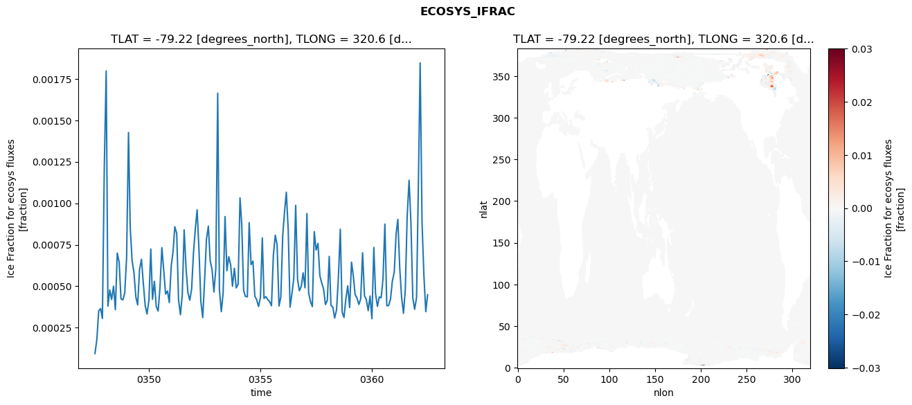
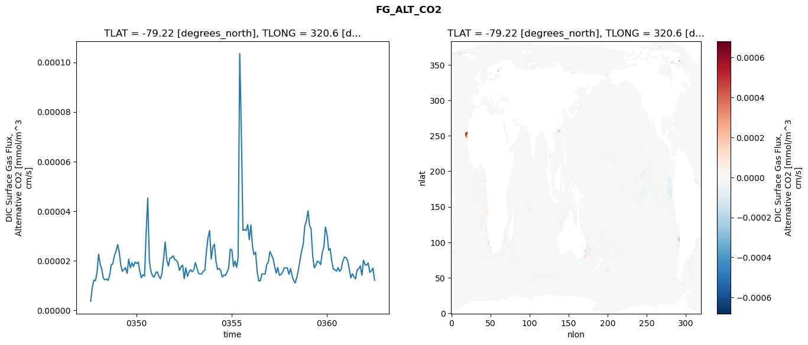

glb-dor_North_Atlantic_basin_045_1999-07-01_00182#
Simulation details#
Case: smyle.cdr-atlas-v0.glb-dor_North_Atlantic_basin_045_1999-07-01_00182.001
Basin: North_Atlantic_basin
Polygon: 45.0
Start date: 1999-07
Show code cell source Hide code cell source
import xarray as xr
import matplotlib.pyplot as plt
Show code cell source Hide code cell source
zarr_store = "/path/to/zarr/store"
# Parameters
zarr_store = "/global/cfs/projectdirs/m4746/Projects/Ocean-CDR-Atlas-v0/data/validation/smyle.cdr-atlas-v0.glb-dor_North_Atlantic_basin_045_1999-07-01_00182.001.validation.zarr"
Show code cell source Hide code cell source
%%time
ds_o = xr.open_zarr(zarr_store).compute()
ds_o
CPU times: user 626 ms, sys: 417 ms, total: 1.04 s
Wall time: 1.22 s
<xarray.Dataset> Size: 2MB
Dimensions: (nlat: 384, nlon: 320, time: 180)
Coordinates:
TLAT float64 8B -79.22
TLONG float64 8B 320.6
ULAT float64 8B -78.95
ULONG float64 8B 321.1
* time (time) object 1kB 0347-08-01 00:00:00 ... 0362-07-01 0...
z_t float32 4B 500.0
Dimensions without coordinates: nlat, nlon
Data variables:
ALK_ALT_CO2_diff (nlat, nlon) float32 492kB nan nan nan ... nan nan nan
ALK_ALT_CO2_rmse (time) float64 1kB 0.01441 0.03156 ... 0.1163 0.137
DIC_ALT_CO2_diff (nlat, nlon) float32 492kB nan nan nan ... nan nan nan
DIC_ALT_CO2_rmse (time) float64 1kB 0.02766 0.06937 ... 0.1297 0.1575
ECOSYS_IFRAC_diff (nlat, nlon) float32 492kB nan nan nan ... nan nan nan
ECOSYS_IFRAC_rmse (time) float64 1kB 9.41e-05 0.0001781 ... 0.0004486
FG_ALT_CO2_diff (nlat, nlon) float32 492kB nan nan nan ... nan nan nan
FG_ALT_CO2_rmse (time) float64 1kB 3.634e-06 8.873e-06 ... 1.207e-05xarray.Dataset
- nlat: 384
- nlon: 320
- time: 180
- TLAT()float64-79.22
- long_name :
- array of t-grid latitudes
- units :
- degrees_north
array(-79.22052261)
- TLONG()float64320.6
- long_name :
- array of t-grid longitudes
- units :
- degrees_east
array(320.56250892)
- ULAT()float64-78.95
- long_name :
- array of u-grid latitudes
- units :
- degrees_north
array(-78.95289509)
- ULONG()float64321.1
- long_name :
- array of u-grid longitudes
- units :
- degrees_east
array(321.12500894)
- time(time)object0347-08-01 00:00:00 ... 0362-07-...
- bounds :
- time_bound
- long_name :
- time
array([cftime.DatetimeNoLeap(347, 8, 1, 0, 0, 0, 0, has_year_zero=True), cftime.DatetimeNoLeap(347, 9, 1, 0, 0, 0, 0, has_year_zero=True), cftime.DatetimeNoLeap(347, 10, 1, 0, 0, 0, 0, has_year_zero=True), cftime.DatetimeNoLeap(347, 11, 1, 0, 0, 0, 0, has_year_zero=True), cftime.DatetimeNoLeap(347, 12, 1, 0, 0, 0, 0, has_year_zero=True), cftime.DatetimeNoLeap(348, 1, 1, 0, 0, 0, 0, has_year_zero=True), cftime.DatetimeNoLeap(348, 2, 1, 0, 0, 0, 0, has_year_zero=True), cftime.DatetimeNoLeap(348, 3, 1, 0, 0, 0, 0, has_year_zero=True), cftime.DatetimeNoLeap(348, 4, 1, 0, 0, 0, 0, has_year_zero=True), cftime.DatetimeNoLeap(348, 5, 1, 0, 0, 0, 0, has_year_zero=True), cftime.DatetimeNoLeap(348, 6, 1, 0, 0, 0, 0, has_year_zero=True), cftime.DatetimeNoLeap(348, 7, 1, 0, 0, 0, 0, has_year_zero=True), cftime.DatetimeNoLeap(348, 8, 1, 0, 0, 0, 0, has_year_zero=True), cftime.DatetimeNoLeap(348, 9, 1, 0, 0, 0, 0, has_year_zero=True), cftime.DatetimeNoLeap(348, 10, 1, 0, 0, 0, 0, has_year_zero=True), cftime.DatetimeNoLeap(348, 11, 1, 0, 0, 0, 0, has_year_zero=True), cftime.DatetimeNoLeap(348, 12, 1, 0, 0, 0, 0, has_year_zero=True), cftime.DatetimeNoLeap(349, 1, 1, 0, 0, 0, 0, has_year_zero=True), cftime.DatetimeNoLeap(349, 2, 1, 0, 0, 0, 0, has_year_zero=True), cftime.DatetimeNoLeap(349, 3, 1, 0, 0, 0, 0, has_year_zero=True), cftime.DatetimeNoLeap(349, 4, 1, 0, 0, 0, 0, has_year_zero=True), cftime.DatetimeNoLeap(349, 5, 1, 0, 0, 0, 0, has_year_zero=True), cftime.DatetimeNoLeap(349, 6, 1, 0, 0, 0, 0, has_year_zero=True), cftime.DatetimeNoLeap(349, 7, 1, 0, 0, 0, 0, has_year_zero=True), cftime.DatetimeNoLeap(349, 8, 1, 0, 0, 0, 0, has_year_zero=True), cftime.DatetimeNoLeap(349, 9, 1, 0, 0, 0, 0, has_year_zero=True), cftime.DatetimeNoLeap(349, 10, 1, 0, 0, 0, 0, has_year_zero=True), cftime.DatetimeNoLeap(349, 11, 1, 0, 0, 0, 0, has_year_zero=True), cftime.DatetimeNoLeap(349, 12, 1, 0, 0, 0, 0, has_year_zero=True), cftime.DatetimeNoLeap(350, 1, 1, 0, 0, 0, 0, has_year_zero=True), cftime.DatetimeNoLeap(350, 2, 1, 0, 0, 0, 0, has_year_zero=True), cftime.DatetimeNoLeap(350, 3, 1, 0, 0, 0, 0, has_year_zero=True), cftime.DatetimeNoLeap(350, 4, 1, 0, 0, 0, 0, has_year_zero=True), cftime.DatetimeNoLeap(350, 5, 1, 0, 0, 0, 0, has_year_zero=True), cftime.DatetimeNoLeap(350, 6, 1, 0, 0, 0, 0, has_year_zero=True), cftime.DatetimeNoLeap(350, 7, 1, 0, 0, 0, 0, has_year_zero=True), cftime.DatetimeNoLeap(350, 8, 1, 0, 0, 0, 0, has_year_zero=True), cftime.DatetimeNoLeap(350, 9, 1, 0, 0, 0, 0, has_year_zero=True), cftime.DatetimeNoLeap(350, 10, 1, 0, 0, 0, 0, has_year_zero=True), cftime.DatetimeNoLeap(350, 11, 1, 0, 0, 0, 0, has_year_zero=True), cftime.DatetimeNoLeap(350, 12, 1, 0, 0, 0, 0, has_year_zero=True), cftime.DatetimeNoLeap(351, 1, 1, 0, 0, 0, 0, has_year_zero=True), cftime.DatetimeNoLeap(351, 2, 1, 0, 0, 0, 0, has_year_zero=True), cftime.DatetimeNoLeap(351, 3, 1, 0, 0, 0, 0, has_year_zero=True), cftime.DatetimeNoLeap(351, 4, 1, 0, 0, 0, 0, has_year_zero=True), cftime.DatetimeNoLeap(351, 5, 1, 0, 0, 0, 0, has_year_zero=True), cftime.DatetimeNoLeap(351, 6, 1, 0, 0, 0, 0, has_year_zero=True), cftime.DatetimeNoLeap(351, 7, 1, 0, 0, 0, 0, has_year_zero=True), cftime.DatetimeNoLeap(351, 8, 1, 0, 0, 0, 0, has_year_zero=True), cftime.DatetimeNoLeap(351, 9, 1, 0, 0, 0, 0, has_year_zero=True), cftime.DatetimeNoLeap(351, 10, 1, 0, 0, 0, 0, has_year_zero=True), cftime.DatetimeNoLeap(351, 11, 1, 0, 0, 0, 0, has_year_zero=True), cftime.DatetimeNoLeap(351, 12, 1, 0, 0, 0, 0, has_year_zero=True), cftime.DatetimeNoLeap(352, 1, 1, 0, 0, 0, 0, has_year_zero=True), cftime.DatetimeNoLeap(352, 2, 1, 0, 0, 0, 0, has_year_zero=True), cftime.DatetimeNoLeap(352, 3, 1, 0, 0, 0, 0, has_year_zero=True), cftime.DatetimeNoLeap(352, 4, 1, 0, 0, 0, 0, has_year_zero=True), cftime.DatetimeNoLeap(352, 5, 1, 0, 0, 0, 0, has_year_zero=True), cftime.DatetimeNoLeap(352, 6, 1, 0, 0, 0, 0, has_year_zero=True), cftime.DatetimeNoLeap(352, 7, 1, 0, 0, 0, 0, has_year_zero=True), cftime.DatetimeNoLeap(352, 8, 1, 0, 0, 0, 0, has_year_zero=True), cftime.DatetimeNoLeap(352, 9, 1, 0, 0, 0, 0, has_year_zero=True), cftime.DatetimeNoLeap(352, 10, 1, 0, 0, 0, 0, has_year_zero=True), cftime.DatetimeNoLeap(352, 11, 1, 0, 0, 0, 0, has_year_zero=True), cftime.DatetimeNoLeap(352, 12, 1, 0, 0, 0, 0, has_year_zero=True), cftime.DatetimeNoLeap(353, 1, 1, 0, 0, 0, 0, has_year_zero=True), cftime.DatetimeNoLeap(353, 2, 1, 0, 0, 0, 0, has_year_zero=True), cftime.DatetimeNoLeap(353, 3, 1, 0, 0, 0, 0, has_year_zero=True), cftime.DatetimeNoLeap(353, 4, 1, 0, 0, 0, 0, has_year_zero=True), cftime.DatetimeNoLeap(353, 5, 1, 0, 0, 0, 0, has_year_zero=True), cftime.DatetimeNoLeap(353, 6, 1, 0, 0, 0, 0, has_year_zero=True), cftime.DatetimeNoLeap(353, 7, 1, 0, 0, 0, 0, has_year_zero=True), cftime.DatetimeNoLeap(353, 8, 1, 0, 0, 0, 0, has_year_zero=True), cftime.DatetimeNoLeap(353, 9, 1, 0, 0, 0, 0, has_year_zero=True), cftime.DatetimeNoLeap(353, 10, 1, 0, 0, 0, 0, has_year_zero=True), cftime.DatetimeNoLeap(353, 11, 1, 0, 0, 0, 0, has_year_zero=True), cftime.DatetimeNoLeap(353, 12, 1, 0, 0, 0, 0, has_year_zero=True), cftime.DatetimeNoLeap(354, 1, 1, 0, 0, 0, 0, has_year_zero=True), cftime.DatetimeNoLeap(354, 2, 1, 0, 0, 0, 0, has_year_zero=True), cftime.DatetimeNoLeap(354, 3, 1, 0, 0, 0, 0, has_year_zero=True), cftime.DatetimeNoLeap(354, 4, 1, 0, 0, 0, 0, has_year_zero=True), cftime.DatetimeNoLeap(354, 5, 1, 0, 0, 0, 0, has_year_zero=True), cftime.DatetimeNoLeap(354, 6, 1, 0, 0, 0, 0, has_year_zero=True), cftime.DatetimeNoLeap(354, 7, 1, 0, 0, 0, 0, has_year_zero=True), cftime.DatetimeNoLeap(354, 8, 1, 0, 0, 0, 0, has_year_zero=True), cftime.DatetimeNoLeap(354, 9, 1, 0, 0, 0, 0, has_year_zero=True), cftime.DatetimeNoLeap(354, 10, 1, 0, 0, 0, 0, has_year_zero=True), cftime.DatetimeNoLeap(354, 11, 1, 0, 0, 0, 0, has_year_zero=True), cftime.DatetimeNoLeap(354, 12, 1, 0, 0, 0, 0, has_year_zero=True), cftime.DatetimeNoLeap(355, 1, 1, 0, 0, 0, 0, has_year_zero=True), cftime.DatetimeNoLeap(355, 2, 1, 0, 0, 0, 0, has_year_zero=True), cftime.DatetimeNoLeap(355, 3, 1, 0, 0, 0, 0, has_year_zero=True), cftime.DatetimeNoLeap(355, 4, 1, 0, 0, 0, 0, has_year_zero=True), cftime.DatetimeNoLeap(355, 5, 1, 0, 0, 0, 0, has_year_zero=True), cftime.DatetimeNoLeap(355, 6, 1, 0, 0, 0, 0, has_year_zero=True), cftime.DatetimeNoLeap(355, 7, 1, 0, 0, 0, 0, has_year_zero=True), cftime.DatetimeNoLeap(355, 8, 1, 0, 0, 0, 0, has_year_zero=True), cftime.DatetimeNoLeap(355, 9, 1, 0, 0, 0, 0, has_year_zero=True), cftime.DatetimeNoLeap(355, 10, 1, 0, 0, 0, 0, has_year_zero=True), cftime.DatetimeNoLeap(355, 11, 1, 0, 0, 0, 0, has_year_zero=True), cftime.DatetimeNoLeap(355, 12, 1, 0, 0, 0, 0, has_year_zero=True), cftime.DatetimeNoLeap(356, 1, 1, 0, 0, 0, 0, has_year_zero=True), cftime.DatetimeNoLeap(356, 2, 1, 0, 0, 0, 0, has_year_zero=True), cftime.DatetimeNoLeap(356, 3, 1, 0, 0, 0, 0, has_year_zero=True), cftime.DatetimeNoLeap(356, 4, 1, 0, 0, 0, 0, has_year_zero=True), cftime.DatetimeNoLeap(356, 5, 1, 0, 0, 0, 0, has_year_zero=True), cftime.DatetimeNoLeap(356, 6, 1, 0, 0, 0, 0, has_year_zero=True), cftime.DatetimeNoLeap(356, 7, 1, 0, 0, 0, 0, has_year_zero=True), cftime.DatetimeNoLeap(356, 8, 1, 0, 0, 0, 0, has_year_zero=True), cftime.DatetimeNoLeap(356, 9, 1, 0, 0, 0, 0, has_year_zero=True), cftime.DatetimeNoLeap(356, 10, 1, 0, 0, 0, 0, has_year_zero=True), cftime.DatetimeNoLeap(356, 11, 1, 0, 0, 0, 0, has_year_zero=True), cftime.DatetimeNoLeap(356, 12, 1, 0, 0, 0, 0, has_year_zero=True), cftime.DatetimeNoLeap(357, 1, 1, 0, 0, 0, 0, has_year_zero=True), cftime.DatetimeNoLeap(357, 2, 1, 0, 0, 0, 0, has_year_zero=True), cftime.DatetimeNoLeap(357, 3, 1, 0, 0, 0, 0, has_year_zero=True), cftime.DatetimeNoLeap(357, 4, 1, 0, 0, 0, 0, has_year_zero=True), cftime.DatetimeNoLeap(357, 5, 1, 0, 0, 0, 0, has_year_zero=True), cftime.DatetimeNoLeap(357, 6, 1, 0, 0, 0, 0, has_year_zero=True), cftime.DatetimeNoLeap(357, 7, 1, 0, 0, 0, 0, has_year_zero=True), cftime.DatetimeNoLeap(357, 8, 1, 0, 0, 0, 0, has_year_zero=True), cftime.DatetimeNoLeap(357, 9, 1, 0, 0, 0, 0, has_year_zero=True), cftime.DatetimeNoLeap(357, 10, 1, 0, 0, 0, 0, has_year_zero=True), cftime.DatetimeNoLeap(357, 11, 1, 0, 0, 0, 0, has_year_zero=True), cftime.DatetimeNoLeap(357, 12, 1, 0, 0, 0, 0, has_year_zero=True), cftime.DatetimeNoLeap(358, 1, 1, 0, 0, 0, 0, has_year_zero=True), cftime.DatetimeNoLeap(358, 2, 1, 0, 0, 0, 0, has_year_zero=True), cftime.DatetimeNoLeap(358, 3, 1, 0, 0, 0, 0, has_year_zero=True), cftime.DatetimeNoLeap(358, 4, 1, 0, 0, 0, 0, has_year_zero=True), cftime.DatetimeNoLeap(358, 5, 1, 0, 0, 0, 0, has_year_zero=True), cftime.DatetimeNoLeap(358, 6, 1, 0, 0, 0, 0, has_year_zero=True), cftime.DatetimeNoLeap(358, 7, 1, 0, 0, 0, 0, has_year_zero=True), cftime.DatetimeNoLeap(358, 8, 1, 0, 0, 0, 0, has_year_zero=True), cftime.DatetimeNoLeap(358, 9, 1, 0, 0, 0, 0, has_year_zero=True), cftime.DatetimeNoLeap(358, 10, 1, 0, 0, 0, 0, has_year_zero=True), cftime.DatetimeNoLeap(358, 11, 1, 0, 0, 0, 0, has_year_zero=True), cftime.DatetimeNoLeap(358, 12, 1, 0, 0, 0, 0, has_year_zero=True), cftime.DatetimeNoLeap(359, 1, 1, 0, 0, 0, 0, has_year_zero=True), cftime.DatetimeNoLeap(359, 2, 1, 0, 0, 0, 0, has_year_zero=True), cftime.DatetimeNoLeap(359, 3, 1, 0, 0, 0, 0, has_year_zero=True), cftime.DatetimeNoLeap(359, 4, 1, 0, 0, 0, 0, has_year_zero=True), cftime.DatetimeNoLeap(359, 5, 1, 0, 0, 0, 0, has_year_zero=True), cftime.DatetimeNoLeap(359, 6, 1, 0, 0, 0, 0, has_year_zero=True), cftime.DatetimeNoLeap(359, 7, 1, 0, 0, 0, 0, has_year_zero=True), cftime.DatetimeNoLeap(359, 8, 1, 0, 0, 0, 0, has_year_zero=True), cftime.DatetimeNoLeap(359, 9, 1, 0, 0, 0, 0, has_year_zero=True), cftime.DatetimeNoLeap(359, 10, 1, 0, 0, 0, 0, has_year_zero=True), cftime.DatetimeNoLeap(359, 11, 1, 0, 0, 0, 0, has_year_zero=True), cftime.DatetimeNoLeap(359, 12, 1, 0, 0, 0, 0, has_year_zero=True), cftime.DatetimeNoLeap(360, 1, 1, 0, 0, 0, 0, has_year_zero=True), cftime.DatetimeNoLeap(360, 2, 1, 0, 0, 0, 0, has_year_zero=True), cftime.DatetimeNoLeap(360, 3, 1, 0, 0, 0, 0, has_year_zero=True), cftime.DatetimeNoLeap(360, 4, 1, 0, 0, 0, 0, has_year_zero=True), cftime.DatetimeNoLeap(360, 5, 1, 0, 0, 0, 0, has_year_zero=True), cftime.DatetimeNoLeap(360, 6, 1, 0, 0, 0, 0, has_year_zero=True), cftime.DatetimeNoLeap(360, 7, 1, 0, 0, 0, 0, has_year_zero=True), cftime.DatetimeNoLeap(360, 8, 1, 0, 0, 0, 0, has_year_zero=True), cftime.DatetimeNoLeap(360, 9, 1, 0, 0, 0, 0, has_year_zero=True), cftime.DatetimeNoLeap(360, 10, 1, 0, 0, 0, 0, has_year_zero=True), cftime.DatetimeNoLeap(360, 11, 1, 0, 0, 0, 0, has_year_zero=True), cftime.DatetimeNoLeap(360, 12, 1, 0, 0, 0, 0, has_year_zero=True), cftime.DatetimeNoLeap(361, 1, 1, 0, 0, 0, 0, has_year_zero=True), cftime.DatetimeNoLeap(361, 2, 1, 0, 0, 0, 0, has_year_zero=True), cftime.DatetimeNoLeap(361, 3, 1, 0, 0, 0, 0, has_year_zero=True), cftime.DatetimeNoLeap(361, 4, 1, 0, 0, 0, 0, has_year_zero=True), cftime.DatetimeNoLeap(361, 5, 1, 0, 0, 0, 0, has_year_zero=True), cftime.DatetimeNoLeap(361, 6, 1, 0, 0, 0, 0, has_year_zero=True), cftime.DatetimeNoLeap(361, 7, 1, 0, 0, 0, 0, has_year_zero=True), cftime.DatetimeNoLeap(361, 8, 1, 0, 0, 0, 0, has_year_zero=True), cftime.DatetimeNoLeap(361, 9, 1, 0, 0, 0, 0, has_year_zero=True), cftime.DatetimeNoLeap(361, 10, 1, 0, 0, 0, 0, has_year_zero=True), cftime.DatetimeNoLeap(361, 11, 1, 0, 0, 0, 0, has_year_zero=True), cftime.DatetimeNoLeap(361, 12, 1, 0, 0, 0, 0, has_year_zero=True), cftime.DatetimeNoLeap(362, 1, 1, 0, 0, 0, 0, has_year_zero=True), cftime.DatetimeNoLeap(362, 2, 1, 0, 0, 0, 0, has_year_zero=True), cftime.DatetimeNoLeap(362, 3, 1, 0, 0, 0, 0, has_year_zero=True), cftime.DatetimeNoLeap(362, 4, 1, 0, 0, 0, 0, has_year_zero=True), cftime.DatetimeNoLeap(362, 5, 1, 0, 0, 0, 0, has_year_zero=True), cftime.DatetimeNoLeap(362, 6, 1, 0, 0, 0, 0, has_year_zero=True), cftime.DatetimeNoLeap(362, 7, 1, 0, 0, 0, 0, has_year_zero=True)], dtype=object) - z_t()float32500.0
- long_name :
- depth from surface to midpoint of layer
- positive :
- down
- units :
- centimeters
- valid_max :
- 537500.0
- valid_min :
- 500.0
array(500., dtype=float32)
- ALK_ALT_CO2_diff(nlat, nlon)float32nan nan nan nan ... nan nan nan nan
- cell_methods :
- time: mean
- grid_loc :
- 3111
- long_name :
- Alkalinity, Alternative CO2
- units :
- meq/m^3
array([[ nan, nan, nan, ..., nan, nan, nan], [ nan, nan, nan, ..., nan, nan, nan], [0.00976562, 0.00219727, 0.01391602, ..., nan, nan, nan], ..., [ nan, nan, nan, ..., nan, nan, nan], [ nan, nan, nan, ..., nan, nan, nan], [ nan, nan, nan, ..., nan, nan, nan]], dtype=float32) - ALK_ALT_CO2_rmse(time)float640.01441 0.03156 ... 0.1163 0.137
- cell_methods :
- time: mean
- grid_loc :
- 3111
- long_name :
- Alkalinity, Alternative CO2
- units :
- meq/m^3
array([0.01440519, 0.03156433, 0.03127691, 0.04262386, 0.04645686, 0.05464085, 0.11435879, 0.18773751, 0.12379675, 0.08883756, 0.10556743, 0.12547743, 0.11411749, 0.0547692 , 0.05142642, 0.05558021, 0.0762265 , 0.09536288, 0.15729041, 0.18475948, 0.12432058, 0.10555453, 0.12556154, 0.14809143, 0.2068509 , 0.20622612, 0.16096736, 0.08363089, 0.05950874, 0.05686816, 0.15607156, 0.21767488, 0.1380558 , 0.10684742, 0.11568242, 0.1292496 , 0.12273764, 0.155271 , 0.13416544, 0.07813982, 0.06453391, 0.05829606, 0.10957188, 0.1637603 , 0.0933848 , 0.10013082, 0.10239323, 0.15229856, 0.197002 , 0.14171854, 0.09751142, 0.0732317 , 0.06866144, 0.0668659 , 0.1137122 , 0.16189416, 0.09863371, 0.10113797, 0.10784903, 0.12760413, 0.12484135, 0.08061906, 0.06579872, 0.06633887, 0.05794677, 0.06491962, 0.12465341, 0.21015932, 0.12038075, 0.12412844, 0.10343741, 0.11882588, 0.11517844, 0.10972672, 0.08281345, 0.08964638, 0.08590179, 0.08724089, 0.14739937, 0.17997874, 0.12722715, 0.12487155, 0.15674923, 0.15133573, 0.12773679, 0.10585943, 0.07579102, 0.0825936 , 0.07242215, 0.07607034, 0.09693056, 0.17553457, 0.11463935, 0.10542653, 0.14149799, 0.12521151, 0.12984378, 0.13294434, 0.12575134, 0.13619669, 0.13338257, 0.0867906 , 0.09503583, 0.11569586, 0.09372143, 0.10500644, 0.09611345, 0.09800835, 0.12937561, 0.10538751, 0.10216678, 0.12664874, 0.14782806, 0.1544419 , 0.19118319, 0.24509599, 0.14064546, 0.1141909 , 0.13043929, 0.12500069, 0.14999052, 0.17259487, 0.15066525, 0.1209355 , 0.12055468, 0.094476 , 0.20662877, 0.23709037, 0.13684895, 0.13283882, 0.11329913, 0.12785599, 0.13172722, 0.0863183 , 0.09543088, 0.11622562, 0.12107916, 0.11106638, 0.12287552, 0.13450209, 0.08725281, 0.09532671, 0.13537314, 0.13751205, 0.14146509, 0.08539058, 0.07091396, 0.07540459, 0.07440347, 0.07862353, 0.1153172 , 0.18343627, 0.10087047, 0.11219456, 0.26864399, 0.16714698, 0.16823055, 0.08752364, 0.10020448, 0.12686696, 0.08177317, 0.08197321, 0.12050604, 0.15631379, 0.09013583, 0.08866053, 0.11619691, 0.1425058 , 0.14201732, 0.10400219, 0.11397361, 0.07851534, 0.08830257, 0.07315178, 0.17775427, 0.18731275, 0.11886018, 0.10074394, 0.11634349, 0.1369638 ]) - DIC_ALT_CO2_diff(nlat, nlon)float32nan nan nan nan ... nan nan nan nan
- cell_methods :
- time: mean
- grid_loc :
- 3111
- long_name :
- Dissolved Inorganic Carbon, Alternative CO2
- units :
- mmol/m^3
array([[ nan, nan, nan, ..., nan, nan, nan], [ nan, nan, nan, ..., nan, nan, nan], [0.01318359, 0.00708008, 0.01220703, ..., nan, nan, nan], ..., [ nan, nan, nan, ..., nan, nan, nan], [ nan, nan, nan, ..., nan, nan, nan], [ nan, nan, nan, ..., nan, nan, nan]], dtype=float32) - DIC_ALT_CO2_rmse(time)float640.02766 0.06937 ... 0.1297 0.1575
- cell_methods :
- time: mean
- grid_loc :
- 3111
- long_name :
- Dissolved Inorganic Carbon, Alternative CO2
- units :
- mmol/m^3
array([0.02765915, 0.0693731 , 0.08429983, 0.09232784, 0.11570987, 0.12274341, 0.15546728, 0.19883583, 0.14449035, 0.1132659 , 0.13466554, 0.15966295, 0.16616341, 0.13881901, 0.13300186, 0.13289552, 0.16566743, 0.18246467, 0.2050908 , 0.21171831, 0.1604211 , 0.13525822, 0.15130665, 0.17453428, 0.22483919, 0.22408486, 0.18962769, 0.12806278, 0.11069847, 0.12100103, 0.17761336, 0.22014309, 0.15378654, 0.12734271, 0.13435096, 0.15439216, 0.16610106, 0.18229866, 0.16345591, 0.1199684 , 0.11267888, 0.1028827 , 0.14158755, 0.17786011, 0.12368335, 0.13216313, 0.13890109, 0.18416743, 0.21388772, 0.17827862, 0.15527435, 0.12617103, 0.13192662, 0.13159425, 0.15881222, 0.18648908, 0.13764351, 0.14113417, 0.13824462, 0.15210194, 0.15043609, 0.12262026, 0.12048778, 0.11327519, 0.10564588, 0.11445787, 0.1472771 , 0.2115742 , 0.14072026, 0.1351541 , 0.12307039, 0.13931603, 0.14145103, 0.17776829, 0.18839497, 0.17282876, 0.15561217, 0.18499306, 0.21459863, 0.21729205, 0.16451748, 0.15957714, 0.17675894, 0.17502088, 0.16203574, 0.14627677, 0.1298324 , 0.13190718, 0.12521331, 0.1278629 , 0.14061289, 0.21944393, 0.16588623, 0.16248828, 0.19200309, 0.18579038, 0.18076903, 0.18436669, 0.2174635 , 0.22789395, 0.2107658 , 0.17781351, 0.19547233, 0.19444374, 0.17227318, 0.14895722, 0.13313927, 0.13652378, 0.15837449, 0.14961778, 0.1659059 , 0.18568453, 0.20373451, 0.21182035, 0.22522636, 0.25785271, 0.17134406, 0.15129074, 0.16242446, 0.16464551, 0.18243634, 0.19059529, 0.17286332, 0.15861721, 0.15544332, 0.11929785, 0.20308643, 0.22751009, 0.14332212, 0.13982453, 0.13409741, 0.17967148, 0.19701468, 0.20324294, 0.22809953, 0.24965367, 0.25026192, 0.24231807, 0.24872812, 0.23722911, 0.17287352, 0.14358712, 0.16382736, 0.16629607, 0.16740951, 0.14455055, 0.17291769, 0.1943889 , 0.18452834, 0.17583829, 0.19232852, 0.2287322 , 0.15440165, 0.14690849, 0.27492674, 0.19602941, 0.18938245, 0.13910196, 0.14752635, 0.17491487, 0.14587421, 0.13729079, 0.15466836, 0.18108349, 0.12420216, 0.11531075, 0.13116009, 0.15661916, 0.16125523, 0.13722477, 0.13916584, 0.12089201, 0.15102822, 0.12985372, 0.20067792, 0.20868744, 0.15545523, 0.123973 , 0.12973209, 0.15750508]) - ECOSYS_IFRAC_diff(nlat, nlon)float32nan nan nan nan ... nan nan nan nan
- cell_methods :
- time: mean
- grid_loc :
- 2110
- long_name :
- Ice Fraction for ecosys fluxes
- units :
- fraction
array([[ nan, nan, nan, ..., nan, nan, nan], [ nan, nan, nan, ..., nan, nan, nan], [ 4.3511391e-06, -5.9902668e-05, 1.9073486e-05, ..., nan, nan, nan], ..., [ nan, nan, nan, ..., nan, nan, nan], [ nan, nan, nan, ..., nan, nan, nan], [ nan, nan, nan, ..., nan, nan, nan]], dtype=float32) - ECOSYS_IFRAC_rmse(time)float649.41e-05 0.0001781 ... 0.0004486
- cell_methods :
- time: mean
- grid_loc :
- 2110
- long_name :
- Ice Fraction for ecosys fluxes
- units :
- fraction
array([9.40982042e-05, 1.78109564e-04, 3.50886836e-04, 3.65671249e-04, 3.06037829e-04, 1.21845438e-03, 1.79742938e-03, 3.80131162e-04, 4.76934164e-04, 4.20105537e-04, 4.99891116e-04, 3.58616254e-04, 7.00217665e-04, 6.44840009e-04, 4.24460199e-04, 4.17458734e-04, 4.57599384e-04, 6.72148058e-04, 1.42674000e-03, 8.55492821e-04, 6.53095327e-04, 5.84491673e-04, 4.35769074e-04, 3.87431476e-04, 6.02075566e-04, 6.62705109e-04, 5.20532813e-04, 3.82935802e-04, 3.32254067e-04, 4.14009517e-04, 7.23941119e-04, 4.21172818e-04, 5.29785263e-04, 3.78087762e-04, 3.50156803e-04, 4.91169956e-04, 7.32252219e-04, 5.94930999e-04, 4.52665886e-04, 4.71634177e-04, 4.01683609e-04, 6.22033138e-04, 7.12371484e-04, 8.58840462e-04, 8.19023212e-04, 4.18168642e-04, 3.28363934e-04, 4.49503598e-04, 8.39664582e-04, 6.06985378e-04, 4.61509019e-04, 4.15776164e-04, 4.82863865e-04, 7.04310189e-04, 8.52136414e-04, 9.60861656e-04, 7.13216387e-04, 4.08616408e-04, 3.11053063e-04, 5.33074392e-04, 7.84727925e-04, 8.61976417e-04, 6.53871217e-04, 5.98929621e-04, 4.65086576e-04, 6.05822326e-04, 1.66369087e-03, 4.78903477e-04, 3.46829213e-04, 4.60787314e-04, 9.20088839e-04, 5.93549705e-04, 6.78417526e-04, 6.28160359e-04, 4.99661792e-04, 6.08257201e-04, 4.90096002e-04, 5.12460455e-04, 1.03216811e-03, 8.73773185e-04, ... 4.35670914e-04, 8.05437634e-04, 9.53447549e-04, 1.06650726e-03, 8.37721835e-04, 3.73942756e-04, 4.55799331e-04, 5.49167772e-04, 9.87276022e-04, 5.39844940e-04, 4.72702416e-04, 5.00186717e-04, 5.80762244e-04, 4.90220909e-04, 9.38346002e-04, 4.60632632e-04, 4.05949089e-04, 3.77259087e-04, 8.29286619e-04, 7.18129174e-04, 7.57994395e-04, 5.62318676e-04, 5.20473682e-04, 4.82295290e-04, 3.89795323e-04, 4.15875446e-04, 6.79993470e-04, 3.84749669e-04, 3.74137469e-04, 3.08417761e-04, 3.58061378e-04, 5.50806041e-04, 8.43743808e-04, 3.43665822e-04, 3.11580127e-04, 4.26540194e-04, 5.02404940e-04, 3.71499327e-04, 6.44839873e-04, 5.66143145e-04, 4.48979394e-04, 4.29351979e-04, 3.90078608e-04, 4.23366901e-04, 7.01564793e-04, 4.41424912e-04, 4.20201528e-04, 3.52956497e-04, 4.41197525e-04, 3.04198166e-04, 7.33639057e-04, 4.54740180e-04, 3.78524890e-04, 4.35381252e-04, 4.30652548e-04, 5.44364566e-04, 8.74595922e-04, 3.82700212e-04, 3.83927481e-04, 4.21745445e-04, 5.30891614e-04, 5.83930672e-04, 8.17344072e-04, 9.03037214e-04, 6.09668832e-04, 4.35198237e-04, 3.36568235e-04, 4.79082016e-04, 9.24812881e-04, 1.13862073e-03, 8.83961385e-04, 4.29268048e-04, 3.61161580e-04, 4.31126959e-04, 1.13024449e-03, 1.84672154e-03, 8.82709503e-04, 5.69971338e-04, 3.46544172e-04, 4.48624855e-04]) - FG_ALT_CO2_diff(nlat, nlon)float32nan nan nan nan ... nan nan nan nan
- cell_methods :
- time: mean
- grid_loc :
- 2110
- long_name :
- DIC Surface Gas Flux, Alternative CO2
- units :
- mmol/m^3 cm/s
array([[ nan, nan, nan, ..., nan, nan, nan], [ nan, nan, nan, ..., nan, nan, nan], [-2.4575115e-09, 1.4574653e-08, 1.2429666e-08, ..., nan, nan, nan], ..., [ nan, nan, nan, ..., nan, nan, nan], [ nan, nan, nan, ..., nan, nan, nan], [ nan, nan, nan, ..., nan, nan, nan]], dtype=float32) - FG_ALT_CO2_rmse(time)float643.634e-06 8.873e-06 ... 1.207e-05
- cell_methods :
- time: mean
- grid_loc :
- 2110
- long_name :
- DIC Surface Gas Flux, Alternative CO2
- units :
- mmol/m^3 cm/s
array([3.63430320e-06, 8.87253185e-06, 1.21744165e-05, 1.18858431e-05, 1.50908697e-05, 2.26122510e-05, 1.83337509e-05, 1.67305987e-05, 1.30113970e-05, 1.22564684e-05, 1.25589292e-05, 1.20178188e-05, 1.40635760e-05, 1.83099992e-05, 1.87116123e-05, 2.21370454e-05, 2.37499517e-05, 2.65288725e-05, 2.33716297e-05, 1.84115630e-05, 1.56530077e-05, 1.64685433e-05, 1.71290836e-05, 1.48114184e-05, 2.05886914e-05, 1.71182808e-05, 1.91669434e-05, 1.75801128e-05, 1.94062514e-05, 1.88240570e-05, 1.94272030e-05, 1.56647431e-05, 1.30803726e-05, 1.43500706e-05, 1.37632100e-05, 3.10992461e-05, 4.52470612e-05, 1.99110982e-05, 1.57028278e-05, 1.38146792e-05, 1.33684439e-05, 1.50306475e-05, 1.55351726e-05, 1.37692881e-05, 1.26589917e-05, 1.48718422e-05, 2.08647278e-05, 2.74915462e-05, 2.03295856e-05, 1.78217157e-05, 2.09681252e-05, 2.11889640e-05, 2.19478438e-05, 2.04016207e-05, 2.01132484e-05, 1.92018699e-05, 1.60467049e-05, 1.74640146e-05, 1.81849551e-05, 1.27213770e-05, 1.70985083e-05, 1.36633498e-05, 1.52721933e-05, 1.63359606e-05, 1.54868894e-05, 1.62257910e-05, 1.92361912e-05, 1.70181672e-05, 1.49249675e-05, 1.46037198e-05, 1.46115957e-05, 1.57118812e-05, 1.60864033e-05, 2.37787778e-05, 2.93165303e-05, 3.21304895e-05, 2.06921474e-05, 2.54735970e-05, 2.66461637e-05, 1.99051930e-05, ... 2.84497428e-05, 3.43974106e-05, 2.56427632e-05, 2.24319140e-05, 2.33682042e-05, 1.56303558e-05, 1.17743532e-05, 1.19110179e-05, 1.46377289e-05, 1.46714466e-05, 1.46087466e-05, 1.84366168e-05, 1.93882124e-05, 2.37132492e-05, 2.21873435e-05, 2.09711929e-05, 1.76195285e-05, 1.49285967e-05, 1.72309901e-05, 1.41024548e-05, 1.43843201e-05, 1.53169221e-05, 1.70650896e-05, 1.70467419e-05, 1.70834862e-05, 1.44958317e-05, 1.67921745e-05, 1.40913499e-05, 1.19122395e-05, 1.10087222e-05, 1.33031701e-05, 1.63979598e-05, 2.00825267e-05, 2.39066769e-05, 2.66477071e-05, 3.39703011e-05, 3.59180131e-05, 4.01008897e-05, 3.40558848e-05, 3.28388464e-05, 2.17918284e-05, 1.71100538e-05, 1.81663278e-05, 1.98123228e-05, 1.93934370e-05, 1.83833262e-05, 2.33219436e-05, 2.53386492e-05, 3.35859268e-05, 3.06771623e-05, 2.42067455e-05, 2.48753305e-05, 1.98812986e-05, 1.66068484e-05, 1.63259094e-05, 1.57575875e-05, 1.71910683e-05, 1.56185523e-05, 1.66520332e-05, 1.99445048e-05, 2.14222989e-05, 2.12084535e-05, 1.98217407e-05, 1.69612420e-05, 1.30230945e-05, 1.46731917e-05, 1.34318223e-05, 1.26043837e-05, 1.63203497e-05, 1.66688354e-05, 1.79220254e-05, 1.40905877e-05, 2.01569795e-05, 1.83050487e-05, 1.81777291e-05, 1.91326666e-05, 1.52434475e-05, 1.58444153e-05, 1.70048210e-05, 1.20677897e-05])
- timePandasIndex
PandasIndex(CFTimeIndex([0347-08-01 00:00:00, 0347-09-01 00:00:00, 0347-10-01 00:00:00, 0347-11-01 00:00:00, 0347-12-01 00:00:00, 0348-01-01 00:00:00, 0348-02-01 00:00:00, 0348-03-01 00:00:00, 0348-04-01 00:00:00, 0348-05-01 00:00:00, ... 0361-10-01 00:00:00, 0361-11-01 00:00:00, 0361-12-01 00:00:00, 0362-01-01 00:00:00, 0362-02-01 00:00:00, 0362-03-01 00:00:00, 0362-04-01 00:00:00, 0362-05-01 00:00:00, 0362-06-01 00:00:00, 0362-07-01 00:00:00], dtype='object', length=180, calendar='noleap', freq='MS'))
Show code cell source Hide code cell source
variables = [v[:-5] for v in ds_o.variables if "_rmse" in v]
Show code cell source Hide code cell source
plt.rcParams.update({'figure.max_open_warning': 0})
for v in variables:
fig, axs = plt.subplots(1, 2, figsize=(15, 6))
ds_o[f"{v}_rmse"].plot(ax=axs[0])
ds_o[f"{v}_diff"].plot(ax=axs[1])
plt.suptitle(v, fontweight="bold")

 




